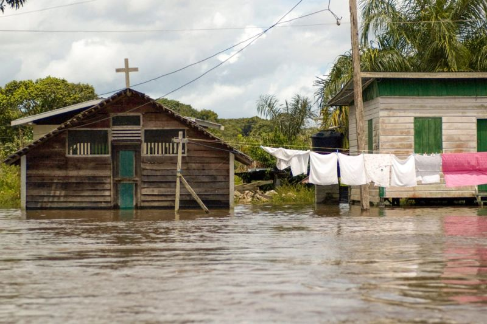

사역
현지 파송 단체와, 그 단체가 돌보는 사역자 곁에 섭니다.

현지에서 사역자를 보내는 단체가 흔들리면, 사역자와 가정도 흔들립니다. NAP는 그 단체가 사람을 돌볼 수 있도록 곁에 섭니다.
현지 파송 단체는 사역자 돌봄, 의료 보험, 위기 대응을 혼자 감당하기 어렵습니다. 폭풍이 오면 떠날 자리도, 남을 방법도 부족합니다.
돌봄 상담을 위한 만남, 의료 보험 보조, 긴급 철수와 위기 대응, 재난 지원을 돕습니다. 단체가 사역자와 가정을 지킬 수 있게 합니다.
사람이 보호됩니다. 보험과 위기 대응은 가정이 현장에 남는 조건입니다.
단체가 서 있습니다. 파송 단체가 튼튼해야 현지 사역이 이어집니다.
재난 뒤에도 남습니다. 긴급 지원은 사역이 한 번의 위기로 끊기지 않게 합니다.